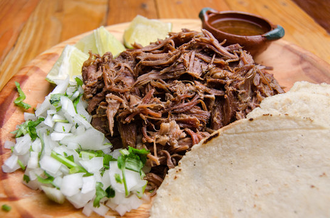

Barbacoa

Barbacoa is a traditional Mexican dish that typically consists of slow-cooked meat, often beef, lamb, or goat, that is seasoned with a variety of spices and herbs. The meat is usually cooked until it is tender and flavorful, making it perfect for tacos, burritos, or as a main dish served with rice and beans.
Ingredients:
- 2 pounds of beef chuck roast (or lamb/goat)
- 1 onion, chopped
- 4 cloves of garlic, minced
- 2 chipotle peppers in adobo sauce, chopped
- 1 tablespoon of cumin
- 1 tablespoon of oregano
- 1 teaspoon of smoked paprika
- 1/2 teaspoon of cinnamon
- 1/2 teaspoon of cloves
- 1/2 cup of beef broth
- 2 tablespoons of apple cider vinegar
- Salt and pepper to taste
Steps
- Season the beef with salt and pepper.
- In a large skillet, heat some oil over medium-high heat and sear the beef on all sides until browned. Remove from the skillet and set aside.
- In the same skillet, add the chopped onion and garlic, and sauté until softened.
- Add the chipotle peppers, cumin, oregano, smoked paprika, cinnamon, and cloves to the skillet, and cook for another minute until fragrant.
- Return the seared beef to the skillet, and pour in the beef broth and apple cider vinegar. Bring to a simmer, then reduce the heat to low, cover, and let it cook for about 3-4 hours, or until the meat is tender and easily shredded with a fork.
- Once the meat is cooked, shred it using two forks and mix it with the cooking juices from the skillet. Adjust seasoning with salt and pepper if needed.
- Serve the barbacoa in tacos, burritos, or as a main dish with rice and beans. Enjoy!
Home